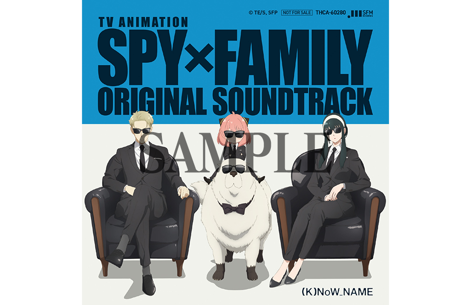

ORIGINAL SOUND TRACK TVアニメ『SPYxFAMILY』オリジナル･サウンドトラック


▼配信サイトUR
URL: https://bumpofchicken.lnk.to/souvenir
【コメント】
●エンディング主題歌を担当されると決まった時の感想を教えてください。
オファーをいただいた時、ちょうど原作を読み終えたタイミングだったので運命のように感じました。とても楽しく読んでいたので、この作品のエンディング主題歌を作れることがすごく楽しみでした。
●原作漫画「SPYxFAMILY」を読んだ感想をお聞かせください。
この「家族構成」そのものが素晴らしい発想だと思いました。武力を持っているがお互いに何も知らない黄昏とヨル、そして武力はないが物語を進める力を持ち、二人の秘密すべてを知っているアーニャ、というバランスが最高ですよね。すごくシリアスな物語になってもおかしくない設定を持つ作品だと思いますが、“喜劇”や“コメディ”として楽しめる所がとても好きでした。
●曲名や楽曲に込めた想いを教えてください。
「家族をテーマに」と、制作の方にメッセージをいただいたので、物語が持つ家族感を意識しながら、自分の考える家族像を歌にしました。以前、同じテーマで「Family Song」という楽曲を作ったことがありましたが、今回の「喜劇」という楽曲では、また全く違うものができたと思います。
●アニメを楽しみにしている方にメッセージをお願いします。
「SPYxFAMILY」のアニメーション世界を彩ることができてとても嬉しいです。一生懸命作りましたので、ぜひエンディングや“喜劇”という楽曲も、隅々まで楽しんで頂けたらと思います。
【プロフィール】
1981年、埼玉県生まれ。音楽家・俳優・文筆家。
2010年に1stアルバム『ばかのうた』にてソロデビュー。2016年10月にリリースしたシングル『恋』は、自身も出演したドラマ『逃げるは恥だが役に立つ』の主題歌として社会現象となった。2021年６月、ドラマ『着飾る恋には理由があって』の主題歌を収録したシングルパッケージ『不思議／創造』をリリースし、Billboard JAPAN 総合ソング・チャート“JAPAN HOT 100”で「不思議」が１位を獲得するなど大ヒットを記録した。俳優として数々の映画・ドラマに出演し、第37回日本アカデミー賞新人俳優賞など多数の映画賞を受賞。